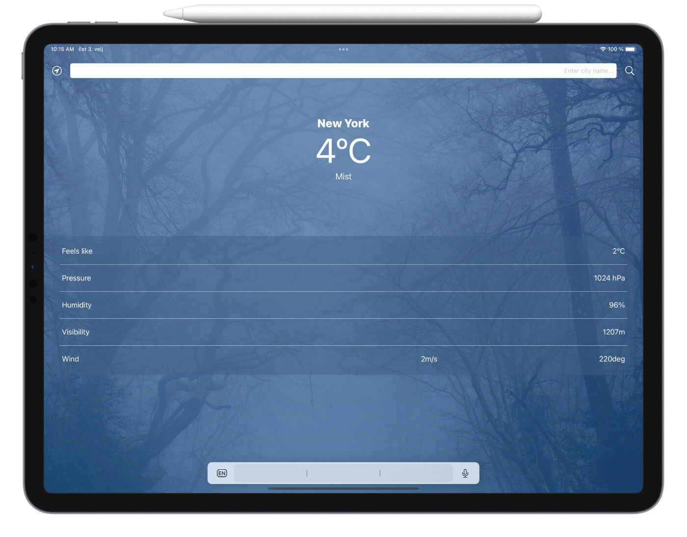

This is a simple weather app I built to show how I make API calls to fetch data from the internet. Users can type in desired city name in the text box and retrieve weather data or they can tap the location icon and get data for their specific location. The API used here is from OpenWeatherMap.org on a free plan for current weather data. This is the documentation I used to build my data model. The visual design is somewhat inspired by Apple's own weather app.
Here are some of the tools and techniques I used:
- UIKit (Storyboard)
- MVC design pattern
- Delegate/Protocol pattern
- Async/Await
- Core Location Framework
Currently, the app has only one view where all data is displayed. I thought dynamically changing the background image based on retrieved weather data was nice so I have chosen a few free pictures from pixabay.com to showcase weather conditions.
When I implemented the visual design in the interface builder, I thought about different screen sizes, so I made sure the background, the text and the list all make sense on different devices by using appropriate constraints. Here is an example of how it looks on an iPad:
What I learned building this app
As this is my first app I made for this portfolio, there were a few snags, but I ended up learning these techniques:
- How to make a data model based on API source documentation with computed properties to handle data types and optionals for easy displaying in the UI
- How to use async/await to run tasks asynchronously
- How to use device location and ask user for permission
- How to organise the project to conform to the MVC design pattern for scalability and easier maintenance
- How to encode the URL to accept spaces and different characters from a string (for example if the user enters “New York” as a city name)
I will continue to improve this app over time and update the repo and this page accordingly. Special thanks to @twostraws and @yu_angela for providing the online teaching materials that helped me a lot learning swift and iOS development, and also to all the nice people on twitter and stackoverflow 😊
Check out the project on my github repo: